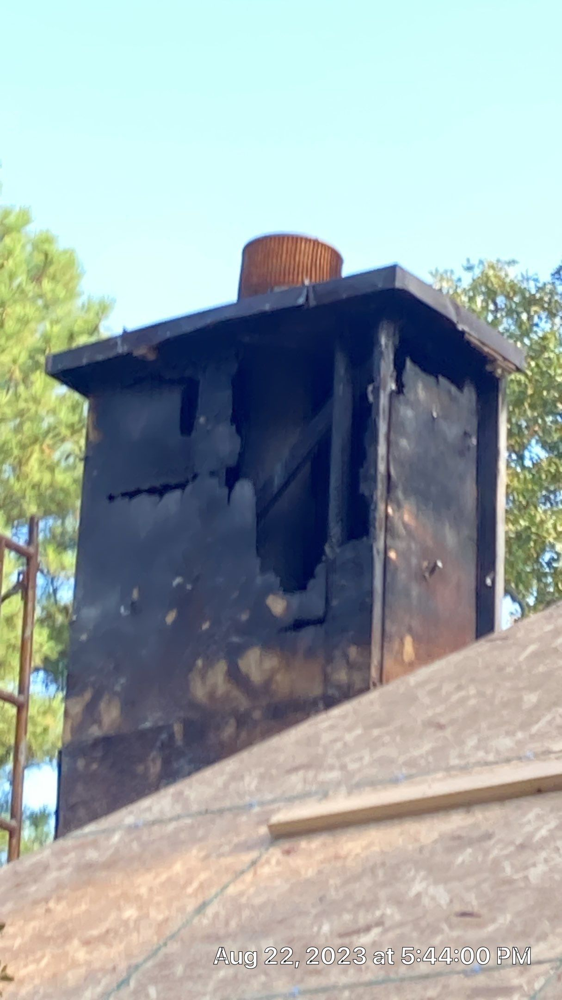
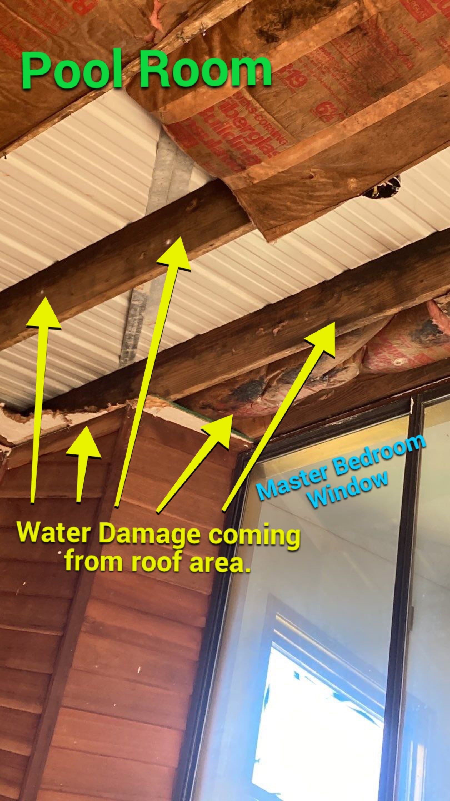
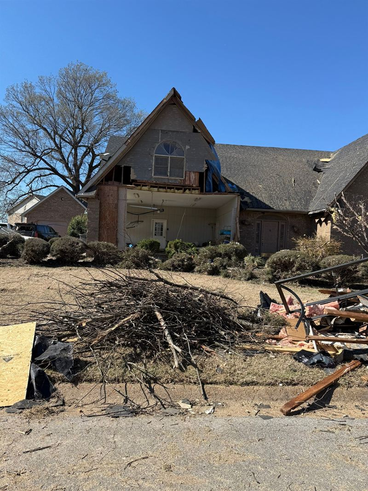
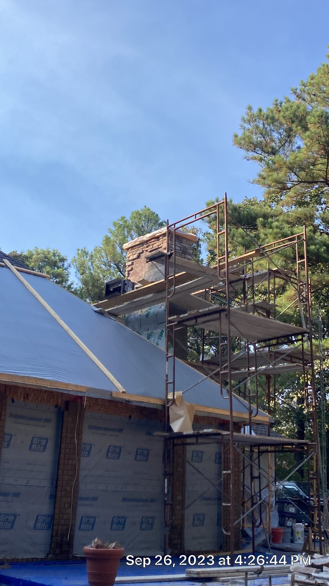
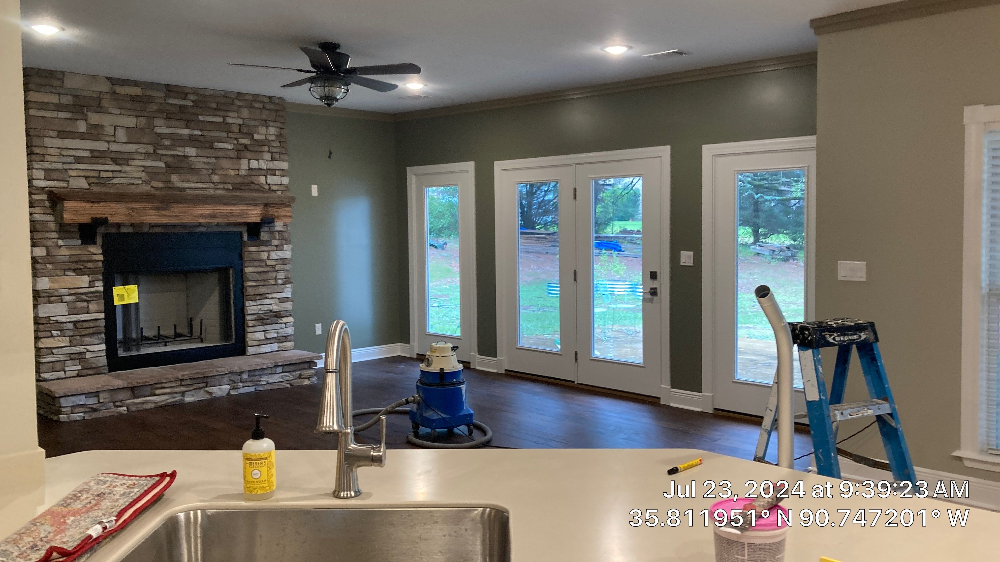
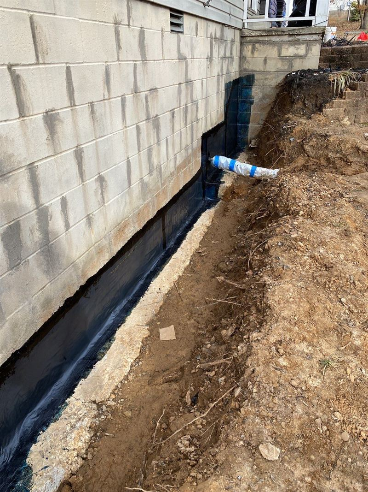

Emergency Response
Stop the damage from getting worse. Board-up, tarping, extraction, stabilization, and documentation of the property as found.
Learn moreEverything Crain Bros Inc does, organized into six categories. We self-perform our trades, so the company that documents your property is the company that rebuilds it.
The first three categories follow a damage event from the first hour through a verified, finished repair. The last three are entry points that require no damage at all. Every category is listed below with the services inside it.

Stop the damage from getting worse. Board-up, tarping, extraction, stabilization, and documentation of the property as found.
Learn more
Find what caused the damage and record what is actually there before any repair is designed.
Learn more
Water, fire, mold, and storm damage restoration, plus personal property and contents care.
Learn more
New construction, additions, full rebuilds, and commercial projects with construction management throughout.
Learn more
Custom kitchens, custom bathrooms, and whole-home renovation built by our own crews.
Learn more
Foundation repair, drainage correction, waterproofing, and crawlspace encapsulation.
Learn moreAvailable 24 hours a day. The work that limits how much repair will be needed.
Securing openings in the building envelope so weather, debris, and further loss stay outside the structure.
Temporary roof covering that stops water entry until a permanent repair can be scheduled and performed.
Removing standing water in the first hours, before it travels further into framing, flooring, and wall cavities.
Shoring and bracing that makes a compromised structure safe to enter and work in.
Making the property safe and closed to entry while the response is organized.
Clearing what has to move before anything else can begin, documented before removal.
Damage is a symptom. These services establish the cause.
Condition assessment establishing what is present and what has been affected, rather than assuming from visible damage.
Learn moreProfessional consulting for restoration planning, scope review, and construction coordination.
Learn moreDetermining the full extent of what has been affected, which is regularly larger than the visible area.
Defining what work is required, in what sequence, and what each part of the project depends on.
Reviewing what current code requires for the work, because a repair that restores a non-compliant condition is not finished.
Independent laboratory analysis, so results come from a party with no stake in the outcome of the repair.
A record of the damage, the property conditions, and the project work, provided to the property owner.
Organized by what damaged the property. Each type is mitigated, cleaned, verified, and rebuilt.
Extraction, structural drying, moisture monitoring, leak detection, cleaning, and antimicrobial treatment.
Learn moreSoot and residue cleaning, smoke odor removal, structural cleaning, thermal damage repair, and debris removal.
Learn moreContainment, remediation, moisture source correction, indoor air quality, and independent clearance testing.
Learn moreRoof, wind, hail, and fallen tree damage, plus exterior envelope repair.
Learn moreInventory, cleaning, pack-out and storage, deodorization, and document and media recovery.
Learn moreNew builds, additions, full rebuilds, and commercial work.
Full-service construction, rebuild, and improvement work on residential and commercial property.
Learn moreSequencing trades, materials, and inspections so a project finishes instead of stalling.
Commercial facility construction and buildout across Northeast Arkansas.
Foundation work as the starting point of a new structure.
Learn moreFraming built for the structure and the design, rather than fitting a design to what is easiest to frame.
Learn moreChanging and improving a building that is already there.
Cabinetry, countertops, flooring, lighting, and layout changes handled as one project.
Learn moreTile, fixtures, plumbing, ventilation, and waterproofing detailed correctly the first time.
Learn moreFull interior renovation coordinated across every trade on one schedule.
These trades are performed by our own crews on both new construction and remodels, and during the rebuild phase of any restoration project. Self-performing means the schedule, the quality, and the accountability stay with us.
Roof replacement and repair on residential and commercial structures.
Learn moreExterior siding installation and replacement.
Learn moreGutter systems that move roof water away from the foundation.
Learn moreBrick, block, and stone work.
Learn moreDeck construction, replacement, and structural repair.
Learn moreHeating and cooling system installation and replacement.
Learn morePlumbing on restoration and construction projects across Northeast Arkansas.
Learn moreElectrical rough-in, replacement, and finish work.
Learn moreFlooring removal and installation across every material type.
Learn moreInterior and exterior painting and finish preparation.
Learn moreInterior trim, millwork, and finish carpentry.
Learn moreCustom cabinet fabrication and installation.
Learn moreCountertop fabrication, templating, and installation.
Learn moreStructural framing for new construction, additions, and rebuilds.
Learn moreFootings, slabs, flatwork, and structural concrete.
Learn moreWindow and door replacement, including openings that must be reframed.
Learn moreInsulation installation and replacement in walls, floors, and attics.
Learn moreDrywall hanging, finishing, and texture matching.
Learn moreMost foundation problems are water problems that have been running long enough to move the structure.
Repairing foundations that have moved, settled, or cracked, after establishing what caused the movement.
Subsurface drainage that intercepts water and moves it away from the structure.
Waterproofing to prevent intrusion and protect the structure.
Learn moreEnclosing and controlling the crawlspace environment beneath the structure.
Retaining walls designed with drainage built into the structure.
Learn moreCorrecting where water goes when it leaves a roof or crosses a lot.
We self-perform our trades, including roofing, siding, gutters, masonry, decks, HVAC, plumbing, electrical, flooring, painting, trim carpentry, cabinetry, countertops, framing, concrete, windows and doors, insulation, and drywall.
Yes. That is the reason the categories are organized this way. The same contractor who responded to the emergency and documented the property performs the repair, so nothing is lost handing off between companies.
Yes. We work on residential and commercial property throughout Northeast Arkansas, and have done so since 1984.
That is fine. Inspection, consulting, and individual trade work all stand on their own. Call (870) 935-6019.
Yes. We are open 24 hours a day and respond to property emergencies.
We document the damage, the property conditions, and the project work. That documentation goes to the property owner so they can file their claim more effectively on their own behalf.